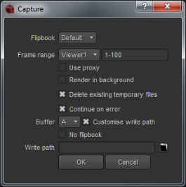

Flipbooking 序列指的是渲染一系列图像 (通常在 代理分辨率)，然后播放它们，以便准确访问附加效果的运动特征。
你有几个选项可以在 Nuke :
• 您可以启用渲染帧的自动磁盘缓存，然后使用 Nuke 的本地观众。此选项不 不 允许您定义特定的播放速率。
• 您可以使用默认的 flipbooking 工具渲染临时图像序列，这是一个 RAM 缓冲回放实用程序，它显示在自己的查看器中，并以定义的帧速率回放序列。
如果你已经购买了 HieroPlayer 的许可证，你可以使用 HieroPlayer 而不是默认的 Nuke 的 flipbook。
• 您还可以在中设置外部 flipbooking 应用程序 Nuke 使用 Python。有关更多信息，请参见 Nuke Python 文档 ( 帮助 > 文档 )。
的 Nuke 查看器会自动将显示的每个帧的一个版本保存到磁盘。当您在查看器中播放序列时，它尽可能从预渲染图像的缓存中读取，从而使实时播放成为可能 (当然，取决于图像分辨率和硬件配置)。可以在中定义查看器缓存的位置和大小 偏好 .
取决于什么 查看器缓冲区位深度 在查看器设置中已设置为，缓存可以包含 8 位 ( 字节 )，16 位 ( 半浮 )，或 32 位 ( 浮动 ) 图像数据。这提供了速度和质量之间的权衡。半浮动和浮动模式提供了比字节更高的精度，但处理速度也较慢。
| 1。 | 单击 编辑> 首选项 要显示 偏好 对话框。 |
| 2. | 在 性能 > 缓存 部分，有一个 磁盘缓存 - 临时目录 字段。使用此选项输入要在其中存储 flipbook 图像的目录的路径名 (例如，c:/temp)。 |
| 3. | 使用 Comp 磁盘缓存大小 控件中，指定要允许图像缓存使用的千兆字节数。 |
| 4. | 单击 好 在右下角, 偏好 对话框 更新首选项，然后重新启动 Nuke . |
查看器现在缓存它在指定目录中显示的每个帧。当您单击查看器上的播放按钮，或在擦洗栏上拖动时, Nuke 从此缓存中读取图像。
请注意，缓存的图像具有反映其在脚本中的输出点位置的唯一名称。这意味着您可以缓存脚本中多个节点的图像，而不会覆盖以前缓存的图像。有关缓存的更多信息，请参见 图像缓存 .
如果你已经购买了 HieroPlayer 的许可证，你可以使用 HieroPlayer 而不是默认的 Nuke 的 flipbook:
| 1。 | 复制 Flipbook_hiero_launch.py 和 Hiro_flipbook.py 文件来自: |
<Installation_folder>/pythonextensions/site-packages/hiero/examples/
给你的 。 Nuke 文件夹。
| 2. | 启动 Nuke 并打开脚本编辑器。 |
| 3. | 类型: |
导入 hiero_flipbook
和新闻 Ctrl/Cmd 返回 .
| 4. |
打开所需的 comp，并通过单击
|
| 5. | 选择 Hiroplayer 从 Flipbook 下拉并继续如下所述。 |
要复制图像序列，请执行以下操作:
| 1。 | 选择要复制其输出的节点。 |
注意: 如果在上面的步骤中选择写入节点，则必须先单击其 渲染 按钮，以便手动将其输出渲染到 文件 字段。此步骤仅在写入节点的情况下是必要的。
| 2. | 选择 渲染 > 选择 Flipbook (或按 Alt + F )。 |
或者，您可以单击
Flipbook
这个
观众
按钮
 在观众的右下角。这可以翻转连接到查看器的节点。
在观众的右下角。这可以翻转连接到查看器的节点。
一个 Flipbook 对话框打开。
| 3. | 检查对话框中的设置是否正确。从当前处于活动状态的查看器复制默认值。如有必要，您可以更改它们: |
• Flipbook -设置您要使用的 flipbooking 应用程序。
• 采取 设置 从- 设置应该使用哪个查看器来绘制默认值。
• 启用 ROI- 检查以定义您感兴趣的区域。
• 渠道 -选择要在 flipbook 结果中显示的层。
• 框架 范围- 设置要翻页的帧范围。
• 使用 代理- 选中以使用代理模式。
• 在背景中渲染 -检查以在背景中渲染。如果你选中这个，你也可以设置 螺纹限制 和 内存限制 控制。前者限制了线程的数量 Nuke 在后台使用，后者限制了缓存内存的数量 Nuke 用途。
注意: 如果您在后台渲染多个序列，这可能会占用您机器上的总 RAM。当运行任何类型的背景渲染时，你需要确保它们不需要比机器上可用的更多的内存，否则你可能会遇到悬挂等问题。
• 删除 现有 临时 文件- 在 flipbooking 之前，选中以删除任何具有相同文件名的现有临时文件。
• LUT -选择适合查看的 LUT。默认情况下，flipbook 用线性颜色空间渲染文件，并尝试将 LUT 文件传递给 flipbook。
• 燃烧 在 的 LUT -如果选中此框，则会在应用 LUT 的情况下渲染 flipbook 文件。如果您取消选中它，将使用等效的 LUT (基于 LUT 的名称) 显示 flipbook。如果你在 flipbook 程序中有一个等效的 LUT，那么最好不要检查 在 LUT 中燃烧 盒子。这样，当你在 flipbook 应用程序中测量像素值时，它们会与你在 Nuke 观众。
• 音频 -如果你想用你的剪辑复制一个音频文件，在这个下拉列表中选择你需要的音频节点。有关音频文件的更多信息 Nuke ,请参见 Nuke 中的音频 .
• 继续 上 错误 -即使在过程中出现错误，也要检查以保持渲染。
• 视图 -如果您在多视图 comp 中工作，请检查要输出的视图。
注意: 的 视图 控件仅在多视图组件中可用。请参阅 立体脚本 欲了解更多信息。
• 缓冲区 -设置您想要包含的缓冲区。
| 4. | 单击 好 . |
Nuke 使用脚本设置中定义的帧范围和分辨率，将选定节点的输出呈现为临时序列。这可能需要几分钟。
渲染完成后, Nuke 启动 Flipbook Viewer 并按临时顺序加载。您可以播放它，并使用 Flipbook Viewer 控件查看它。
如果您翻转了一个立体声组合，您可以在 Flipbook 中单击鼠标右键，然后选择 立体声模式 要以各种配置查看您的 flipbook:
• Side by Side -以正确的纵横比并排显示视图，并在查看器上方添加选择控件。
• 并排挤压 -并排显示视图并挤压以水平适应格式，并在查看器上方添加选择控件。
• 上面被下面挤压 -显示彼此上方和下方的视图，并压缩以垂直适应格式，并在查看器上方添加选择控件。
• 交错 H -水平交错显示视图，并在查看器上方添加选择控件。
• 交错 V -垂直交错显示视图，并在查看器上方添加选择控件。
• 棋盘 -使用交替的棋盘图案 (从左一个像素和从右一个像素) 显示视图，并在查看器上方添加选择控件。
• 浮雕 -同时使用左红色和右绿色显示视图，并在查看器上方添加选择控件。
• 闪烁 -交替显示两个视图，并在查看器上方添加选择控件。
您可以为快速实时 flipbook (也称为 playblast) 捕获查看器的内容，并将内容保存到 。Jpg 供审查。这对于快速实时检查 3D 场景中的动画非常有用，而不必进行完整的扫描线渲染。Playblast flipbooks 观众 “原样”，包括 2D 和 3D 场景，处理和变换覆盖 (如旋转形状轮廓)，擦拭，等等。
|
包含 3D 和 2D 信息 (包括擦除手柄) 的查看器的内容 。Jpg 格式。 |
要捕获查看器内容:
| 1。 | 单击 捕获 查看器下方的按钮，位于 flipbook 按钮的右侧。 |
的 捕获 对话框显示。

| 2. | 选择所需的 Flipbook 工具使用下拉列表。 |
| 3. | 如果脚本中有多个查看器，请选择所需的查看器。 |
| 4. | 检查对话框中的设置是否正确。从当前处于活动状态的查看器复制默认值。如有必要，您可以更改它们: |
• 帧范围 -设置要从中绘制默认值的查看器，并设置要翻页的帧范围。
• 使用 代理- 选中以使用代理模式。
• Render in background - check to render in the background. If you check this, you can also set Thread limit and Memory limit controls. The former limits the number of threads that Nuke uses in the background and the latter limits the amount of cache memory that Nuke uses.
• 删除现有临时文件 -如果要保留以前缓存的文件，请禁用此选项。
• 继续 上 错误 -即使在过程中出现错误，也要检查以保持渲染。
• 缓冲区 -选择要捕获的缓冲区。
• 自定义写入路径 -选中此选项以手动设置位置 (在 写入路径 下面的字段)，其中 。Jpg 文件被存储。
• 没有 flipbook -如果您不需要选择 flipbooking 工具来显示帧范围，请启用此选项。
注意: Nuke 只能记录序列, 。Jpg 格式。不要忘记包括 printf 或哈希帧填充，如 M 或 #### .
| 5. | 单击 好 捕捉观众的内容。 |
帧范围缓存为 。Jpg S 到在中设置的默认位置 偏好 对话框，或者-如果启用-在 写入路径 控制。
|
|